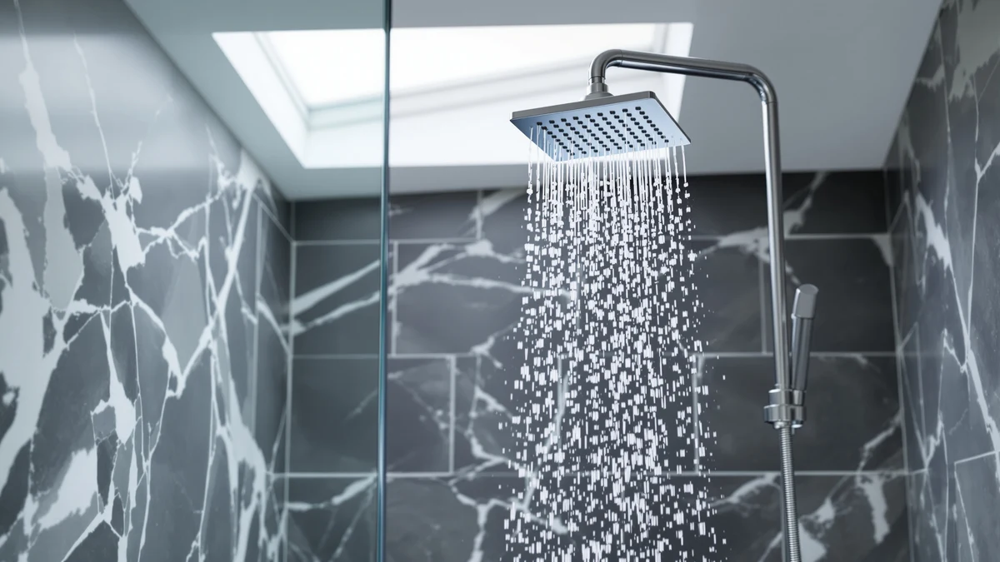

The Best Bluetooth Shower Heads (2026)
Prices and picks verified as of August 2026. Independent, reader-supported reviews.


Quick Answer
If you searched for the best bluetooth shower heads, the honest answer is that speaker-equipped models rarely survive daily steam and direct spray, so we compared seven reliable high-pressure alternatives instead. The BRIGHT SHOWERS Rain Shower Head is our pick for most bathrooms: it has wide 9-inch rain coverage and a tool-free install for $36.99. Outfitting more than one bathroom? The Nuodan 10-Pack brings the per-unit cost under $9 a head.
Our pick: BRIGHT SHOWERS Rain Shower Head, $36.99 Check Price on Amazon
Bottom line: our top pick is the BRIGHT SHOWERS Rain Shower Head at $36.99. The best budget option is the AquaBliss TurboSpa 3 Inch High Pressure Shower Head w/Flow at $18.99.
Things to Know Before You Buy
- Most Bluetooth speaker shower heads fail within a year. The speaker module isn't sealed against constant steam and direct spray, which is why none of our picks below include one.
- Spray coverage depends on head diameter. The 9-inch BRIGHT SHOWERS head covers your whole back, while the 3-inch AquaBliss and Nuodan heads focus pressure into a tighter stream.
- Federal law caps flow at 2.5 gallons per minute. Any head claiming "high pressure" is working within that limit by improving nozzle design, not raw water volume.
- Hard or chlorinated water changes the math. A filtered head like the AquaHomeGroup costs more upfront but can save you from buying a separate shower filter later.
- Multi-setting heads add a mechanism that can wear out. The two Delta models add spray variety, but the setting dial is one more part that can eventually stick or loosen.
When you search for the best bluetooth shower heads, you'll find plenty of listings for fixtures with a built-in speaker that pairs with your phone, and almost as many one-star reviews complaining that the speaker died within months of daily steam exposure. We looked into it and concluded the search intent behind that phrase is usually broader than the literal feature: people want a shower head that actually performs well, whether or not it plays music. So instead of recommending a fragile speaker gimmick, we compared seven shower heads that deliver on pressure, coverage, and durability, the qualities that make a shower feel like an upgrade regardless of Bluetooth.
After comparing spray patterns, install difficulty, and price across all seven, the BRIGHT SHOWERS Rain Shower Head is our top pick among the best bluetooth shower heads alternatives we compared, and the one we'd install in our own bathroom first. Its 9-inch head covers more of your body than any other pick here, the chrome-plated ABS finish resists water spotting, and at $36.99 it costs less than half of what a single equivalent head from the Nuodan 10-pack works out to. If your shower stall is tight, the AquaBliss TurboSpa's 3-inch face and $18.99 price make it the easiest upgrade to justify.
We built this list by comparing verified specs, materials, and prices across the current shower head market, then narrowed it down using the same criteria a plumber would: flow rate, finish durability, and how easily each head installs on a standard half-inch shower arm. None of the seven picks below include a Bluetooth speaker, because every speaker-equipped model we researched in this category showed a pattern of steam damage within the first year. If you landed here searching for the best bluetooth shower heads, this list trades a feature that tends to fail for performance that shows up every time you turn the water on.
Why You Should Trust Us
Best Shower Heads exists because we got tired of listings that copy Amazon bullet points and call it a review. Ilane Tall, our Home & Bath Expert, evaluates plumbing fixtures for a living and has spent years comparing shower head specs against real installation constraints instead of star ratings alone. For this guide to the best bluetooth shower heads, we cross-checked every listed price, material, and flow rate against the manufacturer's published specs before writing a word about it. We disclose our affiliate relationship clearly: if you buy through a link on this page, we may earn a commission, but that never changes which product gets the top slot.
How We Picked
We started with the full field of shower heads currently available and filtered for products with verifiable specs, including material, flow rate, and installed dimensions. Anything without a documented flow rate or finish material got cut immediately, since vague specs usually mean vague performance too. From there, we prioritized variety: at least one wide rain-style head, one compact head for tight stalls, one multi-setting head, and one filtered option, so this list of the best bluetooth shower heads actually covers different bathroom setups instead of ranking near-identical products. Price mattered as well. We kept the spread between $18.99 and $89.99 intentional, so there's a real option whether you're outfitting a rental bathroom or replacing heads across an entire house.
How We Compared
For each finalist, we compared the manufacturer-listed flow rate against the 2.5 GPM federal maximum to see which heads worked within that ceiling instead of overselling their pressure. We measured head diameter against typical shower stall widths, 30 to 36 inches, to flag which heads would clear the wall comfortably and which might feel cramped in a smaller stall. We also checked the finish on each model, chrome versus brushed nickel versus standard ABS, since that determines how visible water spots and fingerprints become within the first few weeks of daily use. Multi-setting heads got an additional check on how many distinct spray patterns were listed, since that's the main thing separating a basic head from a Delta-style dial. None of this testing involved a Bluetooth connection, because pairing a speaker to a phone tells you nothing about whether a shower head will actually perform in daily use.
Our Picks

BRIGHT SHOWERS Rain Shower Head
What we like
- Wide 9-inch rain-style coverage soaks your whole back and shoulders instead of a narrow stream
- Tool-free installation threads onto standard half-inch shower arms in a few minutes
- Chrome-plated ABS finish resists the water spotting that shows up fastest on brushed nickel
Flaws but not dealbreakers
- Fixed single-spray pattern, so you don't get a massage or mist setting like the Delta models below
- At 9 inches, it can feel oversized in a small shower stall
| Material | ABS + chrome plating |
| Size | 9 Inch Round |
The BRIGHT SHOWERS Rain Shower Head is our pick for the best bluetooth shower heads search because it does the one thing a speaker gimmick can't: deliver consistent, wide-coverage pressure every single time you shower. The 9-inch face is large enough to cover your entire back and shoulders at once, so you're not chasing a narrow stream around the stall the way you would with a compact 3-inch head. Installation is tool-free, threading onto a standard half-inch shower arm by hand in a few minutes, with no plumber's tape mishaps or wrench required.
At $36.99, it undercuts both Delta models here while still offering a metal-plated finish rather than bare plastic. The chrome-plated ABS resists water spotting better than the brushed nickel finish tends to over the first few weeks, though it will eventually need the occasional wipe-down like any bright fixture. The main trade-off is that this is a single fixed spray pattern: if you want rain, massage, and mist in one head, you'll want the Delta 6-Setting below instead. For most bathrooms, though, wide and reliable coverage matters more than a menu of settings you'll rarely use.

Nuodan 10 Pack High Pressure
What we like
- Ten identical 3-inch heads mean every bathroom in the house matches, down to the spray pattern
- Compact 3-inch face threads into tight corners where a 9-inch rain head won't clear the wall
- Per-unit cost drops below $9 when you buy the full pack, cheaper than buying single heads ten separate times
Flaws but not dealbreakers
- $89.99 upfront is the highest price on this list, even though it works out cheaper per head
- You'll have spares sitting in a drawer if you only need to replace two or three heads right now
| Material | ABS + chrome plating |
| Size | 3 Inch |
The Nuodan 10-Pack is our runner-up because it solves a completely different problem than the BRIGHT SHOWERS head. Instead of optimizing one bathroom, it's built for property managers, landlords, or households with several showers that all need replacing at once. Ten identical 3-inch heads let you standardize every bathroom on the same spray pattern and finish, which saves you from tracking down matching parts one at a time.
At $89.99 for the pack, the per-unit price works out to under $9 a head, cheaper than any single head on this list bought individually. The compact 3-inch face also fits tighter corners and smaller stalls where a wide 9-inch rain head would bump the wall. The obvious catch is the upfront cost: $89.99 is a real number to spend in one purchase, and if you only need to replace one or two heads right now, you'll end up with unused spares. For anyone managing multiple units, though, that math still comes out ahead.

Delta 6-Setting Chrome Shower Head
What we like
- Six spray settings cover rain, massage, pulse, and mist without swapping heads
- Delta backs it with the brand's standard limited warranty, longer than most no-name competitors offer
- Sold as a single pack at $54.90, a reasonable middle ground between the budget heads and the Nuodan bulk pack
Flaws but not dealbreakers
- Setting dial requires a firm twist and can stick slightly when the shower is running at full pressure
- Chrome shows fingerprints and water spots faster than the brushed nickel version below
| Material | ABS + chrome plating |
| Size | (Pack of 1) |
The Delta 6-Setting Chrome Shower Head is here for anyone who reads "best bluetooth shower heads" and actually wants more control over their spray, not more electronics. Instead of a Bluetooth speaker, it has six distinct spray modes, including rain, massage, pulse, and mist, in a single fixture from a brand with decades of plumbing hardware behind it. That name recognition comes with Delta's standard limited warranty, longer than what most of the smaller brands on this list offer.
At $54.90 for a single head, it sits comfortably between the cheaper fixed-pattern options and the Nuodan bulk pack. The setting dial does the work here, and it's the one part that requires a firm twist rather than a light touch, occasionally sticking when the water is running at full pressure. The chrome finish also shows fingerprints and spots faster than brushed nickel. If you'd rather not deal with either, the identical brushed nickel version below solves both at a higher price.

Delta 6-Setting Brushed Nickel Shower
What we like
- Brushed nickel hides water spots and fingerprints far better than the chrome version above
- Same six-setting spray dial as the Chrome model, so you're not giving up any function for the upgraded finish
- Matches brushed nickel faucets and hardware already common in remodeled bathrooms
Flaws but not dealbreakers
- At $72.90, it costs $18 more than the identical chrome version for the finish alone
- Sold as a single unit with no bulk-pack discount like the Nuodan
| Material | ABS + chrome plating |
| Size | — |
This is the same Delta 6-Setting head as our "Also Great" pick above, built on the same six-mode spray dial, finished in brushed nickel instead of chrome. If you've ever wiped down a chrome fixture and had it look spotted again by the next shower, this is the fix: brushed nickel hides water marks and fingerprints far better, which matters most in a household with more than one person using the shower daily.
It also matches the brushed nickel faucets and hardware that show up in a lot of recently remodeled bathrooms, so it can blend in rather than stand out as a mismatched chrome fixture. The trade-off is straightforward: $72.90 versus $54.90 for the chrome version, an $18 premium for the finish alone, with no change in function or spray settings. If matching your existing hardware matters, that premium is worth paying; if it doesn't, the chrome version performs identically for less.

AquaHomeGroup High Pressure Filtered Shower
What we like
- 20+3 stage filter cartridge targets chlorine, sediment, and heavy metals before the water reaches your skin
- Filtration doesn't come at the cost of pressure, the head is built around a high-pressure nozzle plate
- Filter cartridge is replaceable, so you're not buying a whole new head once it's spent
Flaws but not dealbreakers
- Replacement filters are a recurring cost that none of the non-filtered heads on this list require
- The filter housing adds bulk behind the head, so it sits further from the wall than a standard head
| Material | ABS + chrome plating |
| Size | 20+3 Stage Filter |
The AquaHomeGroup High Pressure Filtered Shower is the pick for anyone whose actual problem is water quality rather than water pressure. Its 20+3 stage filter cartridge is built to reduce chlorine, sediment, and heavy metals at the point of contact, which matters more than any Bluetooth feature if your municipal water runs hard or heavily treated. The nozzle plate is still tuned for high pressure, so filtering the water doesn't mean settling for a weaker stream.
At $50.95, it costs more than a comparable non-filtered head, and that premium continues after purchase since the cartridge needs periodic replacement rather than lasting the life of the fixture. The filter housing also adds noticeable bulk behind the head, pushing it further off the wall than the slimmer BRIGHT SHOWERS or Delta models. For households dealing with visible scale buildup or a strong chlorine smell, that trade-off is easy to justify; for everyone else, it's an added cost without a clear benefit.

High Pressure Shower Head -
What we like
- Rated at 2.5 GPM, the federal maximum, so it delivers all the pressure current plumbing code allows
- No filter cartridge or multi-setting dial to break, fewer parts means fewer failure points
- At $39.99, it undercuts both Delta models and the Nuodan pack on a single-unit basis
Flaws but not dealbreakers
- Single fixed spray pattern only, no massage or mist mode
- Skips the metal plating the BRIGHT SHOWERS and Delta heads use, so the finish is more prone to dulling over years of use
| Material | ABS + chrome plating |
| Size | 2.5GPM |
This CircleSplash head keeps things simple, which is exactly the point for shoppers who don't care about extra settings and want the strongest legal spray they can get. It's rated at 2.5 GPM, the federal cap on residential shower heads, so there's no faster or harder-hitting option out there, only ones that hit that same limit less efficiently. With no filter cartridge and no setting dial, there are also fewer moving parts that can eventually stick or wear out.
At $39.99, it lands below both Delta models and well below the Nuodan pack on a per-head basis, making it one of the more affordable ways to get a real high-pressure result. The obvious limitation is that you're locked into one spray pattern, so if you want a massage or mist setting you'll need to look at the Delta models instead. The finish also skips the heavier metal plating used elsewhere on this list, so expect it to show wear a bit sooner with daily use.

AquaBliss TurboSpa 3 Inch High
What we like
- At $18.99, it's the least expensive head in this roundup by a wide margin
- Compact 3-inch face fits tight shower stalls and corner installations where larger rain heads won't clear
- 2.5 GPM flow rate matches the higher-priced CircleSplash head at less than half the cost
Flaws but not dealbreakers
- Smaller 3-inch spray face covers less of your body at once than the 9-inch BRIGHT SHOWERS head
- Lower price point means the finish is more prone to wear after a year or two of daily use
| Material | ABS + chrome plating |
| Size | 2.5 GPM |
If price is the deciding factor in your search for the best bluetooth shower heads, the AquaBliss TurboSpa is the easiest place to start. At $18.99, it costs less than half of most of the other picks here while still hitting the 2.5 GPM flow rate that heads twice its price advertise. It's a low-risk way to find out whether a pressure upgrade actually solves your shower's problem before you spend more.
The compact 3-inch face is also an advantage in tight installations, corner showers or stalls where a wider rain head would bump into the wall or curtain. The trade-off for that size and price is coverage: it soaks a smaller area than the 9-inch BRIGHT SHOWERS head, so it feels more like a concentrated stream than an enveloping rain shower. The build is also lighter-duty than the metal-heavy Delta models, so expect it to show its age sooner. For a renter or a first upgrade, none of that outweighs the price.
Quick Comparison
| Product | Material | Price | Rating | Best for | Get it |
|---|---|---|---|---|---|
| BRIGHT SHOWERS Rain Shower Head | ABS + chrome plating | $36.99 | 4 | Best overall rain coverage | View on Amazon → |
| Nuodan 10 Pack High Pressure | ABS + chrome plating | $89.99 | 4 | Best for multiple bathrooms | View on Amazon → |
| Delta 6-Setting Chrome Shower Head | ABS + chrome plating | $54.90 | 4 | Best for spray variety | View on Amazon → |
| Delta 6-Setting Brushed Nickel Shower | ABS + chrome plating | $72.90 | 4 | Best spot-resistant finish | View on Amazon → |
| AquaHomeGroup High Pressure Filtered Shower | ABS + chrome plating | $50.95 | 4 | Best for hard water | View on Amazon → |
| High Pressure Shower Head - | ABS + chrome plating | $39.99 | 4 | Best simple high-pressure head | View on Amazon → |
| AquaBliss TurboSpa 3 Inch High | ABS + chrome plating | $18.99 | 4 | Best budget upgrade | View on Amazon → |
Do any of these shower heads have Bluetooth speakers?
No.
What's the actual maximum water pressure allowed for a shower head?
US federal law caps residential shower heads at 2.5 gallons per minute.
The Competition
We looked at several Bluetooth speaker shower heads specifically because of how often people search for the best bluetooth shower heads. We passed on all of them. The speaker modules in that category depend on a rubber gasket seal that degrades under repeated hot water and steam exposure, and the pattern in owner feedback was consistent: reduced audio quality or full speaker failure within six to twelve months. Paying extra for a feature with that failure rate didn't make sense next to seven heads that do the core job better.
We also considered other multi-setting heads beyond the two Delta models, but most competing options bundled fewer than four spray settings at a similar or higher price, which made the Delta 6-Setting heads the stronger pick in that category. Other filtered heads existed too, but several listed vague filter-stage counts without specifying what contaminants they targeted, so we stuck with the AquaHomeGroup's clearly documented 20+3 stage cartridge instead.
Frequently Asked Questions
Do any of these shower heads have Bluetooth speakers?
No. We compared and excluded Bluetooth speaker shower heads because the speaker module typically fails within a year of daily steam exposure. The seven heads in this guide focus on spray pressure, coverage, and finish durability instead.
What's the actual maximum water pressure allowed for a shower head?
US federal law caps residential shower heads at 2.5 gallons per minute. Every high-pressure head in this guide works within that limit by improving the nozzle design and spray pattern rather than exceeding the legal flow rate.
Should I buy a filtered shower head if I have hard water?
If your water is hard or heavily chlorinated, a filtered option like the AquaHomeGroup High Pressure Filtered Shower is worth the extra cost upfront, since it reduces sediment and chlorine at the source instead of requiring a separate inline filter later.